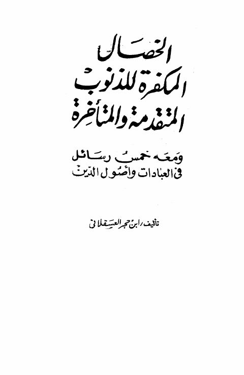

Downloads need an internet connection.
الخصال المكفرة للذنوب المتقدمة والمتأخرة ومعه خمس رسائل في العبادات وأصول الدين
Authors: أحمد بن علي بن حجر العسقلاني
Editors: عبد الله حجاج
**▫️ العنوان: الخصال المكفرة للذنوب المتقدمة والمتأخرة ومعه خمس رسائل في العبادات وأصول الدين** ▪️ المؤلف: #ابن_حجر_العسقلاني ▫️ المحقق: #عبد_الله_حجاج ▪️ تاريخ النشر: 1399 ▫️ بلد النشر: القاهرة، #مصر ▪️ الطبعة: 1 ▫️ عدد الأجزاء: 1 ▪️ الصفحات: 22 ▫️ نوع الوعاء: #كتاب ▪️ التصنيف الرئيسي: #الزهد_والرقائق ۪